Master Computer Networks
in 20 Days
Your complete guide to networking fundamentals, cloud architecture, security, and interview preparation — designed for Cybersecurity, Cloud Support, Technical Support, and IT Support roles.
| Day | Main Topic | What You Will Learn |
|---|---|---|
| Day 1 | Networking Fundamentals | Networks, LAN, WAN, IP address, MAC address, router, switch, modem, packets, ports |
| Day 2 | TCP/IP Model | TCP/IP layers, TCP vs UDP, ports, protocols, packet journey |
| Day 3 | IP Addressing & CIDR | IPv4, subnet masks, CIDR notation, usable IP calculation |
| Day 4 | Subnetting | Subnet design, public/private subnets, network/broadcast addresses |
| Day 5 | VPC & Cloud Networking | VPC, route tables, Internet Gateway, NAT Gateway, cloud architecture |
| Day 6 | DNS | DNS hierarchy, record types, DNS lookup process |
| Day 7 | Routing, NAT & Internet | Routing tables, NAT, PAT, gateways, Internet connectivity |
| Day 8 | Firewalls & Network Security | Firewalls, security groups, NACLs, stateful vs stateless |
| Day 9 | VPN & Secure Networking | VPN types, tunneling, encryption, IPsec, SSL/TLS |
| Day 10 | Architecture & Troubleshooting | End-to-end architecture, troubleshooting methodology |
| Day 11 | OSI Model Deep Dive | 7 layers, encapsulation, OSI vs TCP/IP, protocols per layer |
| Day 12 | DHCP, ARP & Network Services | DHCP DORA process, ARP, ICMP, MAC tables |
| Day 13 | Load Balancing & Proxy | Load balancers, reverse proxy, CDN, high availability |
| Day 14 | Network Tools & Commands | ping, traceroute, nslookup, netstat, Wireshark, ipconfig |
| Day 15 | Wireless & Wi-Fi Security | Wi-Fi standards, WPA/WPA2/WPA3, access points, channels |
| Day 16 | HTTP, HTTPS & Web Protocols | HTTP methods, HTTPS/TLS, FTP, SSH, SMTP, REST APIs |
| Day 17 | Cloud Security & IAM | IAM, Zero Trust, encryption at rest/in transit, compliance |
| Day 18 | Threat Detection & Incident Response | IDS/IPS, SIEM, SOC, common attacks, IR lifecycle |
| Day 19 | Active Directory & Identity | AD, LDAP, Kerberos, SSO, MFA, Group Policy |
| Day 20 | Mock Interviews & Final Review | Role-specific mock interviews, scenario-based questions, final revision |
Cybersecurity
SOC Analyst, Security Engineer, Penetration Tester, Information Security Analyst
Cloud Support
Cloud Support Engineer, AWS/Azure Support, Cloud Administrator, DevOps Support
Technical Support
Technical Support Engineer, Network Technician, System Administrator, Desktop Support
IT Support
IT Support Specialist, Help Desk Analyst, IT Administrator, Service Desk Engineer
Networking Fundamentals
Understand what a network is, how devices communicate, and the building blocks of every network — from your home Wi-Fi to the entire Internet.
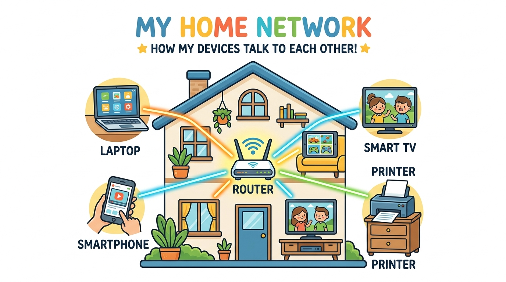
Definition
A computer network is a group of two or more computers and devices connected together so they can share data, resources (like printers), and communicate with each other. Networks can be as small as two laptops connected via Wi-Fi, or as large as the entire Internet connecting billions of devices worldwide.
🌍 Real-Life Example
When you connect to your home Wi-Fi, your phone, laptop, tablet, and smart TV all join the same home network. You can cast a YouTube video from your phone to your TV, print a document from your laptop, or share files between devices — all because they're on the same network. The Internet is the largest network of all — it connects millions of smaller networks across the world.
🏠 LAN (Local Area Network)
- Covers a small area (home, office, school)
- Connected by Ethernet cables or Wi-Fi
- High speed (100 Mbps – 10 Gbps)
- Owned and managed by you
- Example: Your home Wi-Fi network
🌍 WAN (Wide Area Network)
- Covers large geographic areas (cities, countries)
- Connected by ISP lines, fiber, satellites
- Slower than LAN (varies by connection)
- Managed by ISPs/telecom companies
- Example: The Internet itself is a WAN
🌍 Real-Life Example
Think of LAN like talking to people inside your house (fast, private, local). WAN is like calling someone in another country (slower, goes through phone companies, covers huge distances). Your Internet connection bridges your LAN to the WAN — your router is the front door between your private home network and the big wide world.
Definition
An IP (Internet Protocol) Address is a unique numerical label assigned to every device on a network. It works like a home address — it tells the network exactly where to send and receive data. Format: 192.168.1.10 (IPv4) or 2001:0db8::1 (IPv6).
🔒 Private IP Address
- Used inside your local network (LAN)
- Not visible on the Internet
- Ranges:
10.0.0.0/8,172.16.0.0/12,192.168.0.0/16 - Example:
192.168.1.5
🌐 Public IP Address
- Assigned by your ISP
- Visible on the Internet
- Unique across the entire Internet
- Example:
203.0.113.45
🌍 Real-Life Example
Your private IP is like your room number inside a hotel (Room 101, Room 102) — only people inside the hotel use it. Your public IP is like the hotel's street address — it's what the outside world uses to find and reach the hotel. When you browse the Internet, websites see your public IP, not your private one.
Definition
A MAC (Media Access Control) Address is a unique hardware identifier burned into every network device by the manufacturer. It's like a serial number for your device's network card. Format: 00:1A:2B:3C:4D:5E (6 pairs of hexadecimal digits).
🌍 Real-Life Example
If an IP address is like your mailing address (can change when you move), a MAC address is like your fingerprint (permanent, unique to you). Your laptop's Wi-Fi card has a unique MAC address set at the factory. When your router sends data inside your home network, it uses MAC addresses to find the right device — just like delivering a pizza to the right apartment in a building.
💡 Key Difference: IP vs MAC
IP address = Logical, can change, used for network-to-network communication. MAC address = Physical, permanent (usually), used for device-to-device communication within the same local network.
Router
Connects different networks together and directs traffic between them. It's the "traffic police" that decides which way data should go. Your home router connects your LAN to the Internet (WAN).
Switch
Connects devices within the same network (LAN) and uses MAC addresses to send data to the correct device. Think of it as a smart post office inside your building.
Modem
Modulates/Demodulates signals — converts your ISP's signal (phone line, cable, fiber) into a digital signal your router can understand. It's the translator between your home and the ISP.
🌍 Real-Life Example
Think of it like a postal system: The modem is the mailbox on your street (receives mail from outside). The router is the reception desk (sorts mail for the right department). The switch is the office mail sorter (delivers mail to the exact desk/person). In most homes, the modem and router are combined into one device from your ISP.
Packets
When you send data (an email, a file, a web request), it's broken into small chunks called packets. Each packet contains: the data itself, the source IP, the destination IP, and sequence information so the receiving device can reassemble everything in order.
Ports
A port is a numbered "door" on a device (range: 0–65535) that identifies which application/service should handle incoming data. It helps your device know if incoming traffic is for your web browser, email, or game.
| Port Number | Protocol | Service |
|---|---|---|
80 | HTTP | Web browsing (unencrypted) |
443 | HTTPS | Web browsing (encrypted/secure) |
22 | SSH | Secure remote login |
53 | DNS | Domain name resolution |
25 | SMTP | Sending email |
3389 | RDP | Remote Desktop (Windows) |
🌍 Real-Life Example
Imagine sending a big jigsaw puzzle by mail. You can't fit it in one envelope, so you split it into many small envelopes (packets), number them (1 of 50, 2 of 50...), and send them all. The receiver puts them back together using the numbers. Ports are like apartment numbers — the IP address gets the data to the right building, and the port number gets it to the right apartment (application) inside.
Answer: MAC spoofing can be detected using Dynamic ARP Inspection (DAI) on switches, which validates ARP packets against a trusted DHCP snooping database. Enable Port Security on switch ports to limit the number of MAC addresses per port. Use 802.1X authentication (Network Access Control) to authenticate devices before granting network access. Monitor for duplicate MAC addresses using network monitoring tools. In a SOC, unusual ARP traffic patterns would trigger alerts in SIEM systems.
Answer: Systematic approach: 1) Check if the instance has a public IP or Elastic IP. 2) Verify the subnet's route table has a route to the Internet Gateway (0.0.0.0/0 → igw-xxx). 3) Check Security Group outbound rules allow the traffic. 4) Check the Network ACL for the subnet. 5) If in a private subnet, verify NAT Gateway exists and route table points to it. 6) Confirm the Internet Gateway is attached to the VPC. This is essentially checking each network layer from the instance outward.
Answer: Follow the OSI/TCP-IP model bottom-up: 1) Physical: Is the cable plugged in? Is Wi-Fi connected? 2) Network: Run ipconfig — does the device have a valid IP? Try ping 8.8.8.8 — can you reach the Internet by IP? 3) DNS: Try nslookup website.com — is DNS resolving? 4) Application: Try a different browser, clear cache, check proxy settings. 5) If only one site is down, it might be the server — try ping website.com or check a site-status tool.
Answer: A switch connects devices within the same network (LAN) — it uses MAC addresses to forward traffic to the correct device. A router connects different networks together — it uses IP addresses to route traffic between networks (e.g., your LAN to the Internet). Use a switch when you need to connect multiple computers, printers, and devices in the same office. Use a router when you need to provide Internet access or connect two separate networks (e.g., connecting the Sales department network to the Engineering department network).
TCP/IP Model
Understand how data travels across the Internet by learning the TCP/IP model — the foundation of all modern networking.
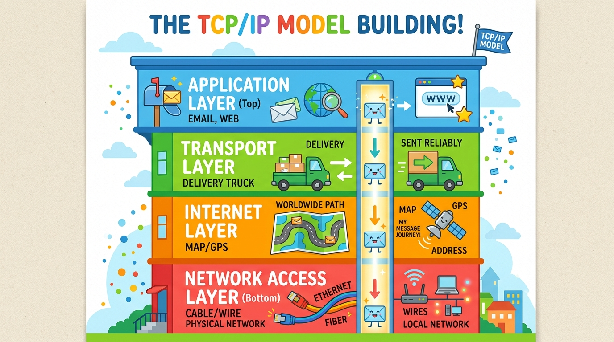
Definition
The TCP/IP (Transmission Control Protocol/Internet Protocol) Model is a 4-layer framework that defines how data is packaged, addressed, transmitted, and received across the Internet. Every time you browse a website, send an email, or stream a video, your data flows through these four layers. It's the actual protocol suite that runs the Internet.
🌍 Real-Life Example
Imagine ordering a product online: Application Layer = You write the order on a form (the data). Transport Layer = The delivery service decides how to ship it — reliable tracked delivery (TCP) or fast untracked mail (UDP). Internet Layer = The GPS navigation system finds the best route to the destination. Network Access Layer = The actual truck, road, and highway that physically moves the package.
| Layer | Name | What It Does | Protocols/Examples |
|---|---|---|---|
| 4 (Top) | Application | Where apps create and receive data — the layer you interact with | HTTP, HTTPS, FTP, SMTP, DNS, SSH |
| 3 | Transport | Ensures reliable (or fast) delivery, breaks data into segments | TCP (reliable), UDP (fast) |
| 2 | Internet | Adds IP addresses, routes packets across networks | IP, ICMP, ARP |
| 1 (Bottom) | Network Access | Physical transmission — cables, Wi-Fi, electrical signals | Ethernet, Wi-Fi, MAC addresses |
📦 TCP (Transmission Control Protocol)
- Reliable — guarantees delivery
- Uses a 3-way handshake (SYN → SYN-ACK → ACK)
- Retransmits lost packets
- Ordered delivery — packets arrive in sequence
- Slower due to error-checking overhead
- Used for: Web (HTTP), Email (SMTP), File transfer (FTP)
🚀 UDP (User Datagram Protocol)
- Fast but unreliable — no delivery guarantee
- No handshake — just sends data immediately
- No retransmission of lost packets
- No ordering — packets may arrive out of order
- Very fast, low overhead
- Used for: Video calls (Zoom), Gaming, DNS lookups, Streaming
🌍 Real-Life Example
TCP is like sending a registered letter with tracking — slower, but you get confirmation it arrived. If it's lost, it's resent. UDP is like shouting across a room — super fast, but if someone didn't hear you, tough luck, you keep talking. That's why video calls use UDP — it's more important to keep the conversation flowing in real-time than to retransmit a frame you missed 2 seconds ago.
- Application Layer: Your browser creates an HTTP GET request for google.com
- Transport Layer: TCP breaks the request into segments, adds port numbers (source: random port, destination: 443 for HTTPS), initiates a 3-way handshake
- Internet Layer: IP adds source IP (your device) and destination IP (Google's server), figures out the best route
- Network Access Layer: Data is converted to electrical signals/radio waves and sent through your Wi-Fi/cable to your router, then to your ISP, through multiple routers across the Internet, until it reaches Google's server
- Google's server processes the request and sends the response back through the same layers in reverse!
Answer: The classic attack is a SYN Flood — an attacker sends thousands of SYN packets but never completes the handshake (never sends ACK). This fills up the server's connection table, causing denial of service. Defenses: SYN Cookies (server doesn't allocate resources until handshake completes), Rate limiting SYN packets, using firewalls/IPS to detect abnormal SYN traffic patterns, and cloud-based DDoS protection services like AWS Shield or Cloudflare.
Answer: Check: 1) SSL/TLS certificate — is it expired, self-signed, or misconfigured? 2) Security Group — is port 443 (HTTPS) allowed in inbound rules? Port 80 might be open while 443 is blocked. 3) Load Balancer listener — is there an HTTPS listener configured with the right certificate? 4) Application configuration — is the web server (nginx/Apache) configured to serve HTTPS? 5) Check certificate chain — intermediate certificates might be missing.
Answer: TCP is connection-oriented — it guarantees delivery using a 3-way handshake, sequencing, and retransmission. Used for email (SMTP), web browsing (HTTP/HTTPS), and file transfer (FTP) where data accuracy matters. UDP is connectionless — it's faster but doesn't guarantee delivery. Used for video streaming, online gaming, VoIP calls, and DNS queries where speed matters more than perfection. If a video frame is lost, you don't want to wait for retransmission — you just show the next frame.
Answer: Understanding ports helps narrow the issue: If only web browsing is slow (ports 80/443), check browser/proxy settings. If everything is slow, it's likely a network bandwidth issue. Use netstat to check active connections and see if something is hogging bandwidth. Check if any port-specific traffic is being throttled. Test with ping (ICMP) for latency and packet loss. Run a speed test. If DNS is slow (port 53), try changing DNS servers to 8.8.8.8. The key is isolating whether the issue is at the application, transport, or network level.
IP Addressing & CIDR
Master how IP addresses work, understand subnet masks, and learn CIDR notation — the language every network engineer speaks.
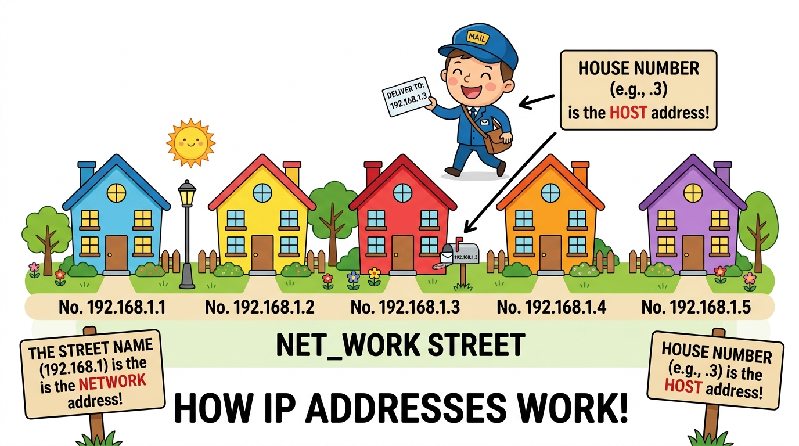
Definition
An IPv4 address is a 32-bit number divided into 4 octets (groups of 8 bits), written in decimal format separated by dots. Each octet ranges from 0 to 255. Example: 192.168.1.100. The address is split into two parts: the Network portion (identifies which network) and the Host portion (identifies which device on that network).
IP Address: 192 . 168 . 1 . 100
In Binary: 11000000.10101000.00000001.01100100
└─────────────┘ └────────────┘
Network Part Host Part
(Which street?) (Which house?)
Subnet Mask: 255 . 255 . 255 . 0
In Binary: 11111111.11111111.11111111.00000000
└── 1s = Network ──┘└ 0s = Host ┘
CIDR Notation: 192.168.1.100 /24
(24 bits for network, 8 bits for host)
Definition
CIDR (Classless Inter-Domain Routing) notation uses a slash followed by a number to indicate how many bits are used for the network portion. The remaining bits are for hosts. Formula: Usable Hosts = 2^(32 - CIDR) - 2 (subtract 2 for network address and broadcast address).
| CIDR | Subnet Mask | Total IPs | Usable Hosts | Example Use |
|---|---|---|---|---|
/8 | 255.0.0.0 | 16,777,216 | 16,777,214 | Massive enterprise (10.0.0.0/8) |
/16 | 255.255.0.0 | 65,536 | 65,534 | Large organization (172.16.0.0/16) |
/24 | 255.255.255.0 | 256 | 254 | Typical office/home network |
/26 | 255.255.255.192 | 64 | 62 | Small department |
/28 | 255.255.255.240 | 16 | 14 | Very small subnet (DMZ, servers) |
/32 | 255.255.255.255 | 1 | 1 | Single host (a specific server) |
🌍 Real-Life Example
Imagine a school with 254 lockers numbered 1-254 — that's a /24 network. A /26 is like having only 62 lockers (a smaller section). A /28 gives you just 14 lockers. The CIDR number tells you how much of the address is "fixed" (the school name) vs "flexible" (the locker numbers). A /24 is the most common — it's what your home router typically uses (192.168.1.0/24 gives you 254 usable addresses).
Answer: No, this is NOT normal and is a major red flag. 10.0.0.0/8 is a private IP range (RFC 1918) that should never appear on the public Internet. This is likely IP spoofing — an attacker forging source addresses to hide their identity or bypass firewall rules. Block this at the firewall with ingress filtering (BCP 38/RFC 2827) — any packet arriving from the Internet with a private source IP should be dropped. Similarly block 192.168.0.0/16 and 172.16.0.0/12 from external interfaces.
Answer: In AWS, you can add a secondary CIDR block to the existing VPC (e.g., add 10.0.1.0/24). Alternatively, if redesigning, recommend starting with a larger CIDR like /16 (65,534 IPs) from the beginning. Important: VPC CIDRs cannot be modified after creation, only new ones can be added. Best practice is to plan ahead — use /16 for VPCs and /24 for individual subnets.
Answer: CIDR /26 means 26 bits for network, 6 bits for hosts. Total IPs = 2^6 = 64. Usable hosts = 64 - 2 = 62. We subtract 2 because the first IP is the network address (e.g., 192.168.1.0) and the last IP is the broadcast address (e.g., 192.168.1.63). So usable range: 192.168.1.1 to 192.168.1.62.
Answer: A subnet mask tells the device which part of the IP address is the network portion and which is the host portion. It's essential because it helps devices determine if another device is on the same network (communicate directly via switch) or a different network (send through the router/gateway). Without a correct subnet mask, devices can't communicate properly. Common masks: 255.255.255.0 (/24) for a typical office, 255.255.0.0 (/16) for a large network.
Subnetting
Learn why we divide networks into smaller pieces, how to calculate subnet ranges, and master the art of network design.
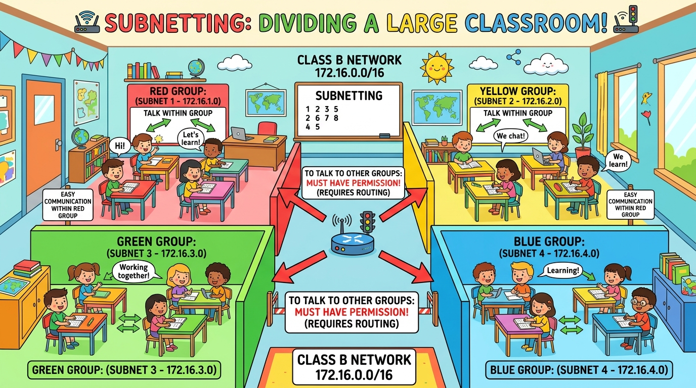
Definition
Subnetting is the practice of dividing a larger network into smaller, more manageable sub-networks (subnets). It improves security, reduces broadcast traffic, and makes network management easier. Instead of one giant network with thousands of devices, you create organized sections.
🌍 Real-Life Example
Think of a large company building. Without subnetting, everyone is on one network — Sales, HR, Engineering, and Guests can all see each other's traffic. With subnetting, you create separate networks: Sales (10.0.1.0/24), HR (10.0.2.0/24), Engineering (10.0.3.0/24), Guest Wi-Fi (10.0.4.0/24). Now HR's sensitive payroll data can't be accidentally (or maliciously) seen by guest users.
Network: 192.168.1.0/26 Subnet Mask: 255.255.255.192 Block Size: 256 - 192 = 64 Subnet 1: 192.168.1.0 → 192.168.1.63 (Network: .0, Broadcast: .63, Usable: .1-.62) Subnet 2: 192.168.1.64 → 192.168.1.127 (Network: .64, Broadcast: .127, Usable: .65-.126) Subnet 3: 192.168.1.128 → 192.168.1.191 (Network: .128,Broadcast: .191, Usable: .129-.190) Subnet 4: 192.168.1.192 → 192.168.1.255 (Network: .192,Broadcast: .255, Usable: .193-.254) Each subnet: 64 total IPs, 62 usable hosts Total subnets: 4 (from one /24 network)
💡 Quick Subnet Formula
Block size = 256 - last non-zero octet of subnet mask. Number of subnets = 2^(borrowed bits). Usable hosts per subnet = 2^(host bits) - 2. Always remember: first IP = network address, last IP = broadcast address — neither is usable for devices.
Answer: Subnetting creates security boundaries. By placing different departments or sensitivity levels on separate subnets, you can apply firewall rules between subnets (micro-segmentation). An attacker who compromises a device on the Guest subnet cannot directly reach the Finance subnet without passing through a router/firewall with strict ACLs. This is the foundation of network segmentation — a key defense-in-depth strategy. Combined with VLANs, it limits the blast radius of a breach.
Answer: A public subnet has a route in its route table pointing 0.0.0.0/0 to an Internet Gateway (IGW) — instances with public IPs can communicate directly with the Internet. A private subnet either has no Internet route or routes 0.0.0.0/0 through a NAT Gateway — instances can reach the Internet for updates (outbound) but cannot be reached from the Internet (inbound). Best practice: Place web servers in public subnets, databases and application servers in private subnets.
Answer: No, they cannot communicate directly. They are on different subnets (192.168.1.0/24 vs 192.168.2.0/24). They need a router (or layer 3 switch) to forward traffic between the two networks. The router acts as the gateway for each subnet. Device 1 would send traffic to its default gateway (e.g., 192.168.1.1), and the router would forward it to the 192.168.2.0/24 network.
Answer: First check if they're on the same subnet. Run ipconfig on the employee's PC and check the printer's IP. If the printer is 192.168.1.50/24 and the PC is 192.168.2.100/24, they're on different subnets — routing is needed. Also check: Is the PC getting a valid IP from DHCP? Is the subnet mask correct? Can the PC ping the printer's IP? Is the printer's firewall blocking connections? Subnet mismatch is one of the most common "can't reach the printer" issues.
VPC & Cloud Networking
Your own private, isolated network in the cloud — learn how VPC architecture works, including route tables, gateways, and subnets.
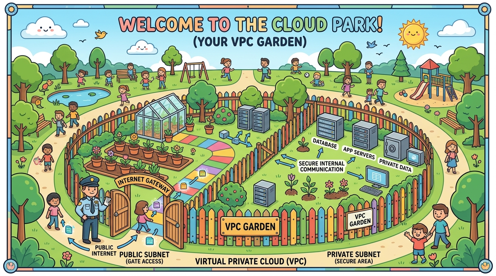
Definition
A VPC (Virtual Private Cloud) is a logically isolated section of a cloud provider's network where you can launch and manage your resources (servers, databases, etc.) in a virtual network that you define and control. You choose the IP range, create subnets, configure route tables, and set up gateways — just like building your own private data center in the cloud.
🌍 Real-Life Example
Imagine renting a private office in a huge co-working building (the cloud). The building provides electricity, Internet, and security (the cloud provider). But inside your office, you decide: how many rooms (subnets), who has access to each room (security groups), which rooms have windows to the outside (public subnets), and which rooms are locked away from outsiders (private subnets). The building's front door is the Internet Gateway.
Internet Gateway (IGW)
The "front door" that connects your VPC to the Internet. Attach it to your VPC to allow public subnet resources to access the Internet.
NAT Gateway
Lets private subnet instances access the Internet (for updates) without being accessible FROM the Internet. One-way door for outbound traffic only.
Route Tables
Rules that determine where network traffic is directed. Each subnet is associated with a route table. Public subnets route to IGW, private subnets route to NAT Gateway.
Subnets
Segments of the VPC's IP range in specific Availability Zones. Public subnets face the Internet; private subnets are isolated from direct Internet access.
VPC: 10.0.0.0/16 (65,534 IPs) ├── Public Subnet A: 10.0.1.0/24 (Web Servers) → Route: 0.0.0.0/0 → Internet Gateway ├── Public Subnet B: 10.0.2.0/24 (Load Balancer) → Route: 0.0.0.0/0 → Internet Gateway ├── Private Subnet A: 10.0.3.0/24 (App Servers) → Route: 0.0.0.0/0 → NAT Gateway └── Private Subnet B: 10.0.4.0/24 (Databases) → Route: local only (no Internet)
Answer: Place the database in a private subnet with no route to the Internet Gateway. Use Security Groups to allow inbound traffic only from the application server's security group on the specific database port (e.g., 3306 for MySQL). Use NACLs as an additional layer. Enable VPC Flow Logs for monitoring. Use encryption at rest (KMS) and in transit (TLS). Disable public accessibility. Use VPC endpoints for AWS service access without Internet exposure.
Answer: An Internet Gateway (IGW) provides two-way Internet access — resources can initiate outbound connections AND receive inbound connections from the Internet. It's used with public subnets. A NAT Gateway provides one-way outbound access — private instances can reach the Internet (e.g., for software updates) but the Internet cannot initiate connections to them. NAT Gateway translates private IPs to a public IP for outbound traffic. Key: IGW = public-facing, NAT = private with outbound-only Internet access.
Answer: The private subnet likely doesn't have a NAT Gateway configured, or the route table isn't set up correctly. Check: 1) Does a NAT Gateway exist in a public subnet? 2) Is the private subnet's route table configured with 0.0.0.0/0 → nat-gw-xxx? 3) Does the NAT Gateway's public subnet have a route to the IGW? 4) Check security groups allow outbound HTTPS (443). Without a NAT Gateway, private instances have no path to the Internet.
Answer: A VPC is the cloud equivalent. Similarities: Both have IP address ranges (CIDR blocks), subnets for segmentation, firewalls for security (Security Groups ≈ device firewalls, NACLs ≈ network firewalls), route tables for traffic direction, and gateways for external connectivity. The main difference is that in the cloud, everything is virtual and software-defined — you can create/modify/delete networks in minutes instead of buying and configuring physical hardware.
DNS — The Internet's Phone Book
Learn how domain names like google.com get translated into IP addresses — the DNS system that makes the Internet usable by humans.
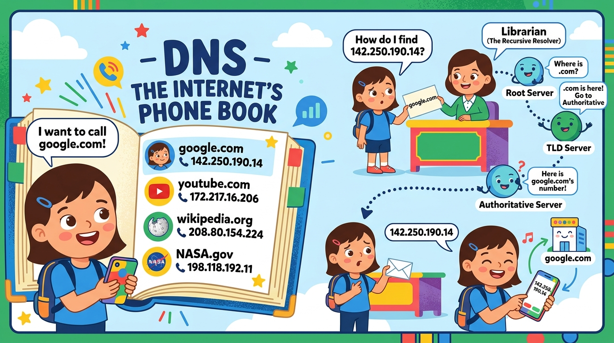
Definition
The Domain Name System (DNS) is a hierarchical, distributed naming system that translates human-readable domain names (like google.com) into machine-readable IP addresses (like 142.250.190.14). Without DNS, you'd have to memorize IP addresses for every website you visit.
🌍 Real-Life Example
Imagine you want to call a pizza shop. You don't memorize their phone number — you look up "Pizza Palace" in your contacts. DNS works the same way: your browser looks up "google.com" and DNS returns "142.250.190.14". It's the Internet's contact list — translating names we remember into numbers computers understand.
| Record | Full Name | Purpose | Example |
|---|---|---|---|
A | Address | Maps domain to IPv4 address | google.com → 142.250.190.14 |
AAAA | Quad-A | Maps domain to IPv6 address | google.com → 2607:f8b0:4004::200e |
CNAME | Canonical Name | Alias — points one domain to another | www.example.com → example.com |
MX | Mail Exchange | Directs email to mail servers | example.com → mail.example.com |
TXT | Text | Stores text info (SPF, DKIM, verification) | SPF record for email authentication |
NS | Name Server | Identifies authoritative DNS servers | example.com → ns1.example.com |
- Browser cache: Browser checks if it already knows the IP (cached from a recent visit)
- OS cache: Operating system checks its DNS cache
- Recursive Resolver: Your ISP's DNS server (or 8.8.8.8) starts the lookup journey
- Root Server: Resolver asks a root server "Where do I find .com domains?" — Root says "Ask the .com TLD server"
- TLD Server: The .com server says "google.com is managed by ns1.google.com"
- Authoritative Server: Google's name server returns the actual IP: 142.250.190.14
- Response: The resolver caches the answer and sends it back to your browser
💡 DNS Caching
DNS responses include a TTL (Time To Live) value telling devices how long to cache the result. High TTL (e.g., 86400 = 24 hours) means fewer lookups but slower DNS changes. Low TTL (e.g., 60 = 1 minute) means faster updates but more DNS traffic. Websites planning changes often lower their TTL beforehand.
Answer: DNS poisoning is when an attacker injects false DNS records into a resolver's cache, redirecting users to malicious websites. Prevention: Use DNSSEC (DNS Security Extensions) to cryptographically sign DNS records. Enable DNS-over-HTTPS (DoH) or DNS-over-TLS (DoT) to encrypt DNS queries. Use trusted DNS resolvers. Monitor for unusual DNS traffic patterns. Implement Response Rate Limiting (RRL) on DNS servers to prevent amplification attacks.
Answer: Most likely DNS propagation — DNS changes can take up to 48 hours to propagate worldwide due to caching at various levels. Check: 1) Was the change actually saved correctly in the DNS provider? 2) What's the TTL on the old record? Previous resolvers will cache the old IP until TTL expires. 3) Use dig or nslookup to verify the authoritative server has the new record. 4) Check NS records — are the domain's nameservers pointing to the right DNS provider? 5) Try flushing local DNS cache: ipconfig /flushdns.
Answer: This is a clear DNS issue. If ping 8.8.8.8 works but ping google.com fails, DNS resolution is broken. Troubleshoot: 1) Check DNS settings: ipconfig /all — is a valid DNS server configured? 2) Test DNS: nslookup google.com. 3) Try a different DNS server: change to 8.8.8.8 or 1.1.1.1. 4) Flush DNS cache: ipconfig /flushdns. 5) Check if the DHCP server is handing out correct DNS settings. 6) Verify the DNS server is accessible (not blocked by firewall on port 53).
Answer: An A record maps a domain name directly to an IP address (e.g., example.com → 93.184.216.34). A CNAME record maps a domain name to another domain name (e.g., www.example.com → example.com) — it's an alias. Key rule: CNAME cannot be used at the root/apex domain (example.com) — only for subdomains (www.example.com, blog.example.com). CNAME follows a chain — it eventually resolves to an A record to get the final IP.
Routing, NAT & Internet Connectivity
Learn how data finds its path across networks, how private IPs access the Internet through NAT, and how routing tables direct traffic.
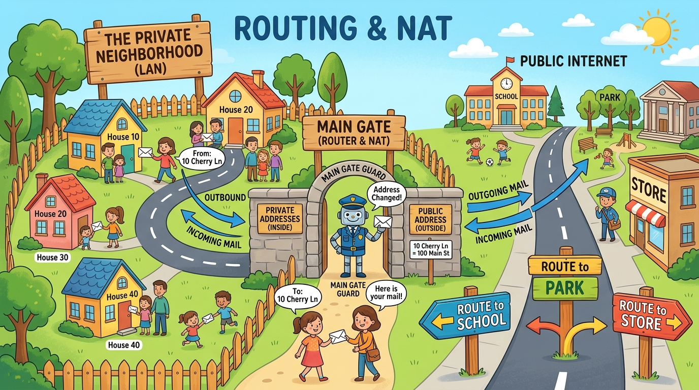
Definition
Routing is the process of selecting the best path for data packets to travel from source to destination across one or more networks. Routers use routing tables — a set of rules that determine where to forward each packet based on its destination IP address.
Destination Next Hop Interface Meaning ────────────────────────────────────────────────────────────── 10.0.1.0/24 local eth0 Local subnet - deliver directly 10.0.2.0/24 10.0.1.1 eth0 Route to other subnet via gateway 0.0.0.0/0 10.0.1.1 eth0 Default route - everything else ────────────────────────────────────────────────────────────── Default Route (0.0.0.0/0) = "If I don't know where to send it, send it HERE"
🌍 Real-Life Example
Think of routing like road signs at intersections. A sign says "City Center → Left", "Airport → Right", "Everything Else → Straight". Your router does the same thing — it checks each packet's destination and follows the matching route. The default route (0.0.0.0/0) is the "everywhere else" sign — usually pointing to the Internet gateway.
Definition
NAT (Network Address Translation) translates private IP addresses to a public IP address, allowing multiple devices in a private network to access the Internet using a single public IP. PAT (Port Address Translation) is a type of NAT that uses different port numbers to track which internal device sent which request — this is what your home router does.
🌍 Real-Life Example
Imagine an apartment building with one phone number. When residents call out, the receptionist (NAT) replaces their room extension with the building's main number. When a call comes back, the receptionist checks which extension it's for (using PAT — port numbers) and forwards it to the right room. Your home router does exactly this — all your devices share one public IP, but the router uses port numbers to track which device requested what.
OUTBOUND (Your laptop visiting google.com):
──────────────────────────────────────────────────
Before NAT: Source: 192.168.1.10:54321 → Dest: 142.250.190.14:443
After NAT: Source: 203.0.113.5:61234 → Dest: 142.250.190.14:443
(Private IP → Public IP)
INBOUND (Google's response):
──────────────────────────────────────────────────
Before NAT: Source: 142.250.190.14:443 → Dest: 203.0.113.5:61234
After NAT: Source: 142.250.190.14:443 → Dest: 192.168.1.10:54321
(Public IP → Private IP, forwarded to your laptop)
Answer: NAT hides internal IP addresses from the Internet, making it harder for attackers to directly target internal devices. Unsolicited inbound connections fail because the NAT table has no mapping. However, NAT is NOT a firewall because: 1) It wasn't designed for security — it's a workaround for IPv4 exhaustion. 2) It doesn't inspect packet content. 3) It doesn't block malicious outbound traffic. 4) Protocols like FTP and SIP can break through NAT using ALGs. Always use a proper firewall alongside NAT for defense-in-depth.
Answer: Internet Gateway: Two-way — allows both inbound and outbound Internet traffic. Used with public subnets. Resources need a public/Elastic IP. Free (no per-hour charge). NAT Gateway: One-way outbound only — private resources can initiate connections to the Internet but can't be reached from outside. Deployed in a public subnet. Has hourly cost + data processing charges. Used when private instances need updates/patches but shouldn't be Internet-accessible.
Answer: If the user can ping the gateway (router), the local network works fine. Issue is likely beyond the router: 1) NAT configuration — is NAT enabled on the router? 2) Default route — does the router have a default route to the ISP? 3) DNS — can they ping 8.8.8.8? If yes, it's a DNS issue. 4) ISP connectivity — check modem lights, run diagnostics. 5) Firewall — is the router's firewall blocking outbound traffic? Try traceroute 8.8.8.8 to see where packets stop.
Answer: The default gateway is the router's IP address that a device sends traffic to when the destination is outside its local network. It's the "way out" to the rest of the world. If not configured: the device can communicate with other devices on the same subnet (LAN) but cannot reach any external network, including the Internet. It's like having a front door locked from inside — you can move around your house but can't leave. Check with ipconfig and verify the default gateway matches the router's IP.
Firewalls & Network Security
Your network's security guard — learn how firewalls control traffic using rules, and understand the difference between stateful and stateless filtering.
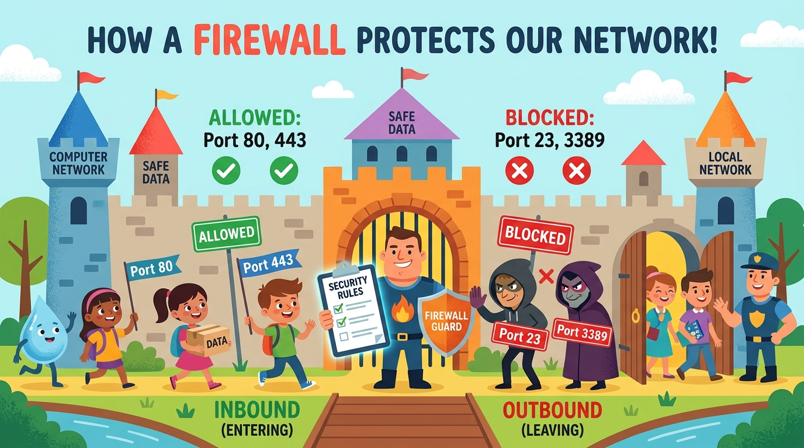
Definition
A firewall is a network security system that monitors and controls incoming and outgoing network traffic based on predefined security rules. It creates a barrier between a trusted internal network and untrusted external networks (like the Internet). Firewalls examine each packet and decide to allow or deny it based on rules about IP addresses, ports, and protocols.
🌍 Real-Life Example
Think of a nightclub bouncer with a guest list. The bouncer (firewall) checks everyone at the door against the rules: "VIP guests (port 443) → allowed in." "Unknown visitors (port 3389) → denied entry." "People leaving (outbound) → can leave freely." The bouncer enforces rules for who can enter and leave the building, just like a firewall enforces rules for network traffic.
🧠 Stateful Firewall
- Remembers connections — tracks the state of active sessions
- If outbound traffic is allowed, return traffic is automatically allowed
- Smarter, more secure
- AWS Example: Security Groups
- Only needs inbound OR outbound rule
📋 Stateless Firewall
- No memory — evaluates each packet independently
- Must explicitly allow both inbound AND outbound traffic
- Faster but requires more rules
- AWS Example: NACLs (Network ACLs)
- Needs separate rules for request and response
💡 AWS Security Groups vs NACLs
Security Groups: Stateful, instance-level, allow-only rules (no deny), evaluated all rules together. NACLs: Stateless, subnet-level, allow AND deny rules, evaluated in order (rule numbers). Best practice: Use Security Groups as your primary firewall and NACLs as an additional layer of defense.
Answer: Port 3389 is RDP (Remote Desktop Protocol). This is likely a brute-force attack or reconnaissance attempt. Immediate response: 1) Block the source IP at the firewall. 2) Check if RDP is exposed to the Internet — it shouldn't be. 3) Check for successful logins from that IP. 4) If RDP must be accessible, restrict it to specific IPs, enable NLA (Network Level Authentication), use MFA, and move it behind a VPN. 5) Review firewall rules — port 3389 should NEVER be open to 0.0.0.0/0. 6) Set up rate-limiting and account lockout policies.
Answer: This is a critical security risk — it exposes SSH to the entire Internet. Advise: 1) Restrict to specific IP addresses or CIDR blocks (e.g., their office IP). 2) Use AWS Systems Manager Session Manager instead of SSH — no need to open any port. 3) If SSH is required, use a bastion/jump host in a public subnet, and allow SSH only from the bastion's security group. 4) Use key-based authentication (disable password auth). 5) Enable VPC Flow Logs and GuardDuty for monitoring.
Answer: A stateful firewall tracks connections. If you allow outbound HTTP (port 80), the return traffic is automatically allowed because the firewall remembers you initiated the connection. A stateless firewall treats each packet independently — you must create separate rules for outbound requests AND inbound responses. Practical example: In AWS, Security Groups (stateful) only need an inbound rule on port 80 for web traffic — responses are auto-allowed. NACLs (stateless) need both an inbound rule for port 80 AND an outbound rule for ephemeral ports (1024-65535) for the response.
Answer: Web browsing works (ports 80/443 are open) but email requires different ports: SMTP (25 or 587) for sending, IMAP (143 or 993) or POP3 (110 or 995) for receiving. Check if the firewall blocks these ports. Also check: 1) Is the mail server accessible? (telnet mail.company.com 993). 2) Is the firewall blocking specific application traffic? 3) Are any content filtering rules blocking email protocols? 4) For Office 365: ports 443 (HTTPS) and 993 (IMAPS) should be open.
VPN & Secure Networking
Create secret, encrypted tunnels across the Internet — learn how VPNs protect your data and enable secure remote access.
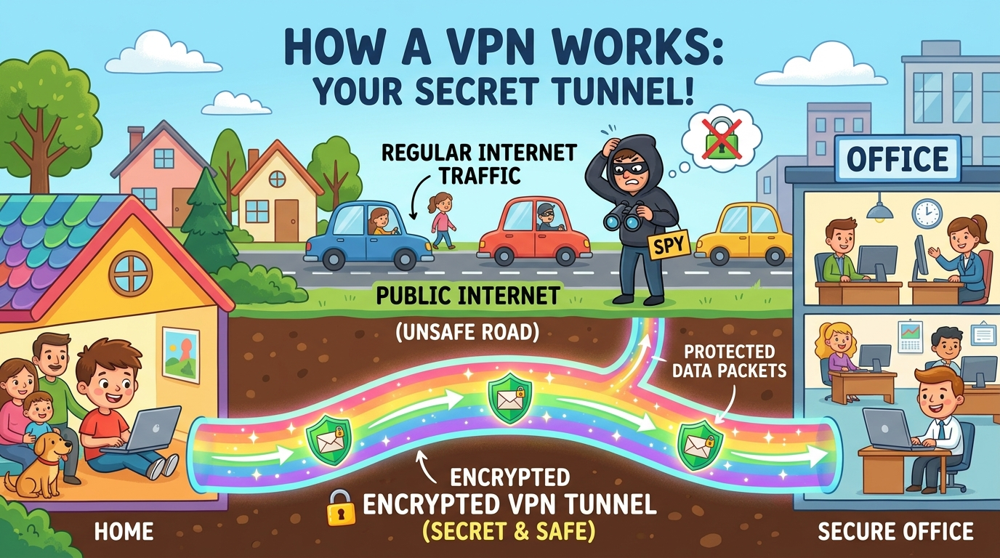
Definition
A VPN (Virtual Private Network) creates a secure, encrypted tunnel over a public network (the Internet) between two endpoints. It ensures that data traveling through this tunnel is encrypted (unreadable to eavesdroppers), authenticated (verified identity), and integrity-protected (not tampered with). VPNs make it appear as if you're directly connected to a private network, even when you're accessing it from across the world.
🌍 Real-Life Example
Working from home during a pandemic? When you connect to your company's VPN, it's like building an invisible, secure tunnel from your living room directly into the office network. Even though your data travels over the public Internet (passing through ISPs, routers, etc.), it's wrapped in encryption — like putting a letter in an unbreakable safe before mailing it. No one along the way can read it.
🏢 Site-to-Site VPN
- Connects two entire networks together
- Example: Office A ↔ Office B or On-premises ↔ Cloud VPC
- Always-on, permanent connection
- Uses IPsec protocol
- Hardware VPN gateways on both sides
👤 Remote Access VPN
- Connects individual users to a network
- Example: Employee laptop → Office network
- On-demand — user connects when needed
- Uses SSL/TLS or IPsec
- VPN client software on user's device
Answer: IPsec VPN operates at Layer 3 (network layer), encrypts all traffic between two endpoints, requires dedicated client software, and is ideal for site-to-site connections and when full network access is needed. SSL/TLS VPN operates at Layer 4-7, works through a web browser, easier to set up, and is ideal for remote access when users need to access specific applications. Recommendation: Site-to-site = IPsec. Remote workers accessing web apps = SSL/TLS VPN. Full remote network access = IPsec with client. SSL/TLS VPNs are more firewall-friendly (port 443) and don't require special client software.
Answer: Three main options: 1) AWS Site-to-Site VPN — encrypted IPsec tunnel over the Internet. Quick to set up, lower cost, but performance depends on Internet quality. 2) AWS Direct Connect — dedicated private connection from their data center to AWS. Consistent performance, higher bandwidth, lower latency, but takes weeks to set up and costs more. 3) VPN over Direct Connect — combines both for encrypted traffic over a dedicated line. Recommendation depends on budget, latency requirements, and data sensitivity.
Answer: 1) Check split tunnel vs full tunnel — in split tunnel, only specific traffic goes through VPN. 2) Verify VPN IP assignment — does the user get an IP in the correct range? 3) Check routing — does the VPN push routes for internal subnets to the client? 4) Firewall rules — do internal firewalls allow traffic from VPN IP range? 5) DNS resolution — is the VPN providing internal DNS servers? Can the user resolve internal hostnames? 6) Check for IP conflicts — if the user's home network uses the same IP range as the office.
Answer: Public Wi-Fi is inherently risky — attackers can perform man-in-the-middle attacks, sniff unencrypted traffic, or set up evil twin hotspots. Advice: 1) Always use a VPN on public Wi-Fi — it encrypts all traffic. 2) Verify HTTPS on all websites (lock icon). 3) Turn off auto-connect to Wi-Fi networks. 4) Don't access banking or sensitive accounts without VPN. 5) Use the company VPN for work. 6) Forget the network after use. 7) Disable file sharing and AirDrop. 8) Keep firewall enabled on the device.
End-to-End Architecture & Troubleshooting
Put it all together — build a complete network architecture in your mind and master the art of systematic troubleshooting.
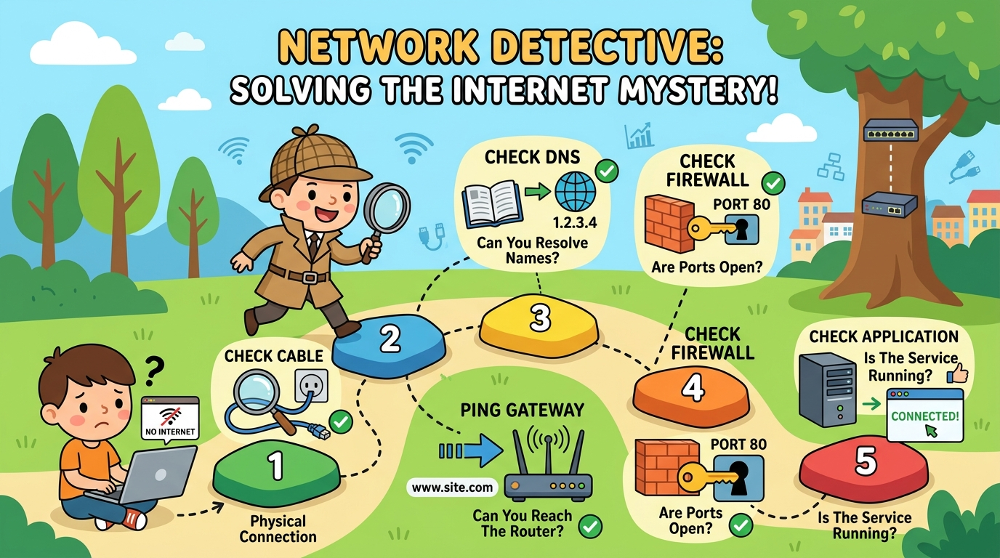
The Golden Rule
Always troubleshoot from the bottom of the network stack up (Physical → Data Link → Network → Transport → Application). This systematic approach ensures you don't waste time checking application settings when the cable is unplugged!
Step 1: PHYSICAL LAYER ├── Is the cable plugged in? Damaged? ├── Are network adapter LEDs lit? └── Is Wi-Fi connected to the right SSID? Step 2: NETWORK LAYER (IP) ├── ipconfig/ifconfig — Do you have a valid IP? ├── ping 127.0.0.1 — Is TCP/IP stack working? ├── ping [gateway IP] — Can you reach the router? └── ping 8.8.8.8 — Can you reach the Internet? Step 3: DNS ├── nslookup google.com — Is DNS resolving? ├── Try different DNS server (8.8.8.8) └── ipconfig /flushdns — Clear DNS cache Step 4: FIREWALL/SECURITY ├── Check firewall rules — Is the port open? ├── telnet [server] [port] — Can you reach the service? └── Check security group/NACL rules (cloud) Step 5: APPLICATION ├── Is the service running on the server? ├── Check application logs for errors └── Try a different browser/client
USER'S DEVICE (192.168.1.10)
│ connects via Wi-Fi/Ethernet
▼
HOME ROUTER/MODEM (Gateway: 192.168.1.1, Public IP: 203.0.113.5)
│ NAT translates private → public IP
▼
ISP NETWORK
│ routes through multiple hops
▼
DNS RESOLVER (8.8.8.8)
│ resolves "example.com" → 93.184.216.34
▼
INTERNET BACKBONE (multiple routers/hops)
│
▼
CLOUD VPC (10.0.0.0/16)
├── Internet Gateway
├── Load Balancer (Public Subnet: 10.0.1.0/24)
│ │ distributes traffic
│ ▼
├── Web Servers (Private Subnet: 10.0.3.0/24)
│ │ Security Group: Allow 80/443 from LB
│ ▼
└── Database (Private Subnet: 10.0.4.0/24)
Security Group: Allow 3306 from Web Servers only
Answer: First, gather information: Who's affected? (One user or everyone?) When did it start? Any recent changes? Then follow systematic troubleshooting while looking for security indicators: 1) Check if the user's account is locked or disabled (potential brute-force indicator). 2) Verify firewall/IDS logs — are connection attempts being blocked? Has a new rule been added? 3) Check for unauthorized changes to security groups, ACLs, or firewall rules. 4) Look at authentication logs — failed login attempts? 5) If DNS isn't resolving, check for DNS poisoning. 6) If it's a network segmentation issue, verify VLAN configurations haven't been tampered with. Key: Always consider both operational AND security causes.
Answer: VPC (10.0.0.0/16) spanning multiple AZs. Public subnets (2 AZs) with an Application Load Balancer distributing traffic. Private subnets (2 AZs) with Auto Scaling Group of EC2 instances (or ECS/Fargate containers). Database layer in private subnets with RDS Multi-AZ for automatic failover. NAT Gateways in each AZ for outbound access. Security Groups: ALB allows 80/443 from 0.0.0.0/0, EC2 allows traffic only from ALB SG, RDS allows only from EC2 SG. Route 53 for DNS with health checks. CloudFront CDN for static content. WAF on the ALB for application-layer protection.
Answer: 1) Scope: All users or specific ones? All sites or specific ones? 2) Bandwidth: Run speed tests from multiple devices — is the ISP delivering promised speeds? 3) Network: Check router/switch for high CPU or memory usage. Use netstat to find bandwidth hogs. 4) Latency: Run ping and traceroute to identify where delays occur — local network, ISP, or destination? 5) DNS: Slow DNS can feel like slow Internet — try nslookup response times. 6) Physical: Check for duplex mismatches, failing cables, or overloaded access points. 7) Monitoring: Check network monitoring tools for historical bandwidth usage patterns.
Answer: Systematic approach: 1) Physical: Check Ethernet cable is properly connected, try a different cable/port. 2) IP: Run ipconfig — does the PC have a valid IP or a 169.254.x.x (APIPA — means DHCP failed)? 3) If APIPA: ipconfig /release then ipconfig /renew. Check if DHCP server is reachable, check the switch port is enabled. 4) If valid IP: ping the default gateway. If fails, check VLAN assignment on the switch port — new employee might be on wrong VLAN. 5) If gateway pings: ping 8.8.8.8. If fails, check routing/NAT. 6) If IP pings work: check DNS settings and proxy configuration. 7) Also verify the network port is activated and registered in IT systems.
OSI Model Deep Dive
Master the 7-layer OSI model — the universal framework for understanding how network communication works from cables to applications.
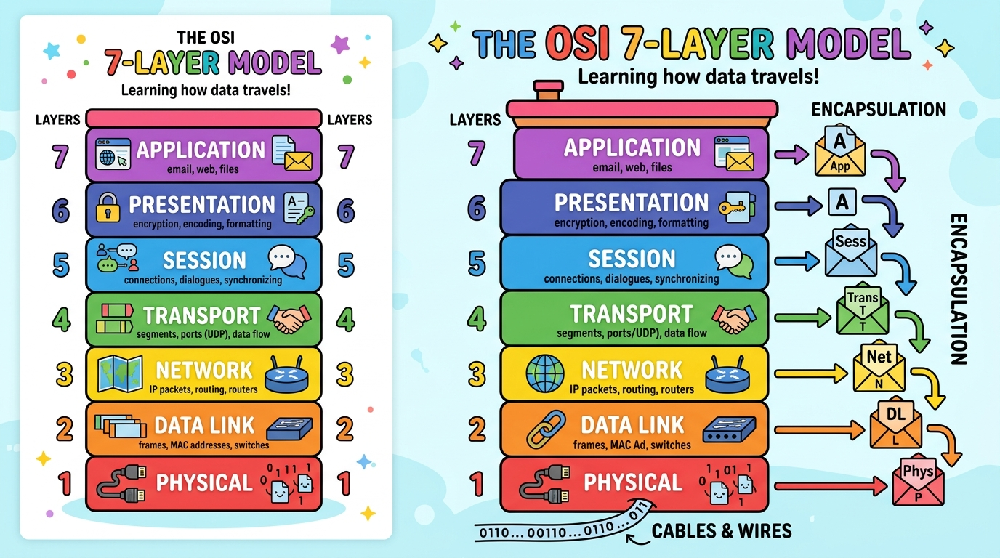
Definition
The OSI (Open Systems Interconnection) Model is a conceptual framework with 7 layers that standardizes how network communication works. Each layer has a specific role and communicates with the layers above and below it. Remember: "Please Do Not Throw Sausage Pizza Away" (Physical, Data Link, Network, Transport, Session, Presentation, Application).
| # | Layer | Function | PDU | Protocols/Devices |
|---|---|---|---|---|
| 7 | Application | User interface, app services | Data | HTTP, FTP, SMTP, DNS, SSH |
| 6 | Presentation | Data formatting, encryption, compression | Data | SSL/TLS, JPEG, ASCII, UTF-8 |
| 5 | Session | Establishes, manages, terminates sessions | Data | NetBIOS, RPC, PPTP |
| 4 | Transport | Reliable/unreliable delivery, ports | Segment | TCP, UDP |
| 3 | Network | Routing, IP addressing, path selection | Packet | IP, ICMP, Routers |
| 2 | Data Link | MAC addressing, error detection, frames | Frame | Ethernet, Wi-Fi, Switches |
| 1 | Physical | Electrical signals, cables, physical media | Bits | Cables, Hubs, Fiber, Radio |
🌍 Real-Life Example
Sending a letter internationally is like the OSI model: Application (7) = You write the letter. Presentation (6) = You translate it to the recipient's language. Session (5) = You establish who you're writing to. Transport (4) = You choose registered mail (TCP) or regular mail (UDP). Network (3) = The postal system determines the route (via which countries). Data Link (2) = The local mail truck delivers between post offices. Physical (1) = The actual truck, airplane, and roads that carry the mail.
Answer: A WAF (Web Application Firewall) operates at Layer 7 (Application). It inspects HTTP/HTTPS traffic content, looking for attacks like SQL injection, XSS, and CSRF. A traditional network firewall operates at Layers 3-4, filtering based on IP addresses, ports, and protocols — it can't see the content of web requests. A next-gen firewall (NGFW) combines both, operating at Layers 3-7. For a web application, you need a WAF because a traditional firewall would see port 443 (allowed) but can't detect a SQL injection payload inside the HTTPS request.
Answer: The OSI model is a theoretical/conceptual framework with 7 layers — used for teaching, troubleshooting, and discussion. The TCP/IP model is the practical implementation with 4 layers that actually runs the Internet. Mapping: OSI Layers 5-7 (Session, Presentation, Application) → TCP/IP Application Layer. OSI Layer 4 (Transport) → TCP/IP Transport. OSI Layer 3 (Network) → TCP/IP Internet. OSI Layers 1-2 (Physical, Data Link) → TCP/IP Network Access. In interviews, always reference both — OSI for understanding concepts, TCP/IP for real-world implementation.
Answer: Layer 2 (Data Link) problems include: MAC address conflicts, VLAN misconfiguration (device on wrong VLAN), spanning tree issues (loops causing broadcast storms), duplex mismatches (one side full-duplex, other half-duplex causing collisions), switch port errors (port disabled, err-disabled state), and ARP issues. Symptoms: intermittent connectivity, CRC errors in interface counters, slow local network performance. Tools: Check switch port status, ARP tables (arp -a), interface error counters, and MAC address tables on the switch.
Answer: Encapsulation is the process of wrapping data in headers (and sometimes trailers) as it moves down the OSI layers. Think of it like Russian nesting dolls or putting a letter in multiple envelopes: Your message (data) gets wrapped in a Transport header (adds port numbers) → then a Network header (adds IP addresses) → then a Data Link header (adds MAC addresses) → then converted to bits on the wire. At the receiving end, each layer unwraps its header (de-encapsulation) until the original data reaches the application. Each layer's "package" has its own name: Data → Segment → Packet → Frame → Bits.
DHCP, ARP & Network Services
How devices automatically get their IP addresses (DHCP) and find each other's hardware addresses (ARP) — essential network services.
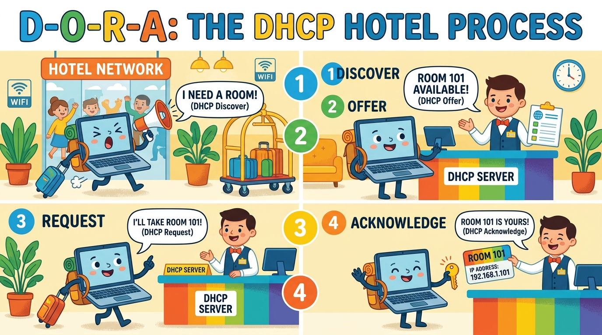
Definition
DHCP (Dynamic Host Configuration Protocol) automatically assigns IP addresses, subnet masks, default gateways, and DNS server addresses to devices when they join a network. Without DHCP, you'd have to manually configure every device — imagine doing that for 1,000 office computers!
Step 1: DISCOVER → Client broadcasts: "I need an IP address!" (to 255.255.255.255) Step 2: OFFER → Server responds: "Here, you can have 192.168.1.50!" Step 3: REQUEST → Client replies: "Yes, I'll take 192.168.1.50 please!" Step 4: ACKNOWLEDGE → Server confirms: "Done! 192.168.1.50 is yours for 24 hours." The client also receives: Subnet mask, Default gateway, DNS servers After the LEASE expires, the process repeats (or the lease is renewed).
Definition
ARP (Address Resolution Protocol) translates IP addresses into MAC addresses. When Device A wants to send data to Device B on the same network, it knows B's IP but needs B's MAC address. ARP broadcasts "Who has 192.168.1.50?" and Device B responds "That's me! My MAC is AA:BB:CC:DD:EE:FF."
🌍 Real-Life Example
ARP is like shouting in a classroom: "Who is student #50?" and student #50 raises their hand and says "That's me, and I'm wearing a red shirt!" (the MAC address). Now you know exactly who they are and can pass them a note directly. Your device keeps an ARP cache so it doesn't have to shout every time — like remembering that student #50 wears a red shirt.
Answer: In ARP poisoning, an attacker sends fake ARP replies to associate their MAC address with the gateway's IP. Now all traffic meant for the gateway flows through the attacker first (man-in-the-middle). The attacker can sniff, modify, or drop packets. Prevention: Dynamic ARP Inspection (DAI) on switches validates ARP packets. Enable DHCP snooping as the trust database for DAI. Use static ARP entries for critical devices. Deploy 802.1X for port authentication. Monitor ARP tables for anomalies. Use encrypted protocols (HTTPS, SSH) so even if intercepted, data is unreadable.
Answer: A 169.254.x.x address is an APIPA (Automatic Private IP Addressing) address — it means DHCP failed to assign a proper IP. In AWS: 1) Check if the subnet has available IP addresses (not exhausted). 2) Verify the VPC DHCP options set is correctly configured. 3) Check if the instance's ENI (Elastic Network Interface) is properly attached. 4) The subnet's CIDR might be too small. 5) Look at the instance's system log for network initialization errors. In AWS, the VPC provides built-in DHCP — if it fails, it's usually a configuration or capacity issue.
Answer: Causes: 1) Rogue DHCP server — someone plugged in an unauthorized router/DHCP server. 2) Static IP conflict — a device has a manually set IP that's in the DHCP pool. 3) DHCP scope overlap — two DHCP servers with overlapping IP ranges. Fix: 1) Identify and remove rogue DHCP servers (enable DHCP snooping on switches). 2) Set DHCP exclusion ranges for statically assigned IPs. 3) Check DHCP lease table for conflicts. 4) Use arp -a to find the conflicting MAC addresses. 5) Enable IP conflict detection on the DHCP server.
Answer: Windows: ipconfig /all (view full config including DHCP server, lease info), ipconfig /release (release current IP), ipconfig /renew (request new IP from DHCP), ipconfig /flushdns (clear DNS cache). Linux/Mac: ifconfig or ip addr show (view config), dhclient -r (release), dhclient (renew). Also: arp -a (view ARP cache), ping [gateway] (test connectivity). If DHCP gives a 169.254.x.x address, the DHCP server is unreachable — check cable, switch port, and DHCP server status.
Load Balancing & Proxy Servers
Distribute traffic, improve performance, and ensure high availability with load balancers, reverse proxies, and CDNs.
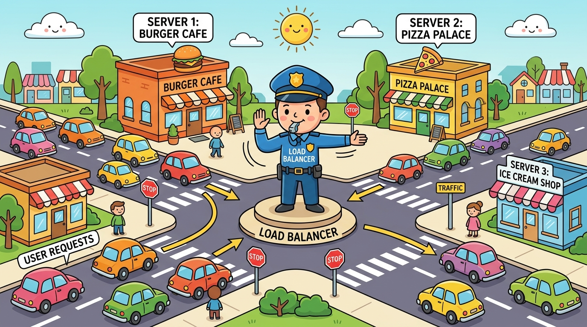
Definition
A Load Balancer distributes incoming network traffic across multiple servers to ensure no single server becomes overwhelmed, improving responsiveness and availability. If one server goes down, the load balancer redirects traffic to the healthy servers — ensuring zero downtime.
🌍 Real-Life Example
Imagine a restaurant with 5 checkout counters. A host at the front (load balancer) directs customers to the counter with the shortest line. If Counter 3 closes (server goes down), the host stops sending people there and distributes them to the remaining 4 counters. This is exactly how websites like Amazon handle millions of users — they have hundreds of servers behind load balancers.
| Algorithm | How It Works | Best For |
|---|---|---|
| Round Robin | Sends requests to servers in order (1, 2, 3, 1, 2, 3...) | Equal-capacity servers |
| Least Connections | Sends to the server with fewest active connections | Varying request durations |
| IP Hash | Same client IP always goes to same server | Session persistence needed |
| Weighted | More powerful servers get more traffic | Mixed-capacity servers |
⬅️ Forward Proxy
- Sits between users and the Internet
- Users send requests through it
- Hides the user's identity from websites
- Used for: Content filtering, anonymity, caching
- Example: Corporate proxy that blocks social media
➡️ Reverse Proxy
- Sits between the Internet and servers
- Internet requests pass through it to reach servers
- Hides the server's identity from users
- Used for: Load balancing, SSL termination, caching
- Example: Nginx, CloudFlare, AWS ALB
CDN (Content Delivery Network)
A CDN is a network of servers distributed worldwide that cache and deliver content from the location closest to the user. When you watch Netflix, the video streams from a CDN server in your city — not from Netflix's main data center thousands of miles away. This dramatically reduces latency and load on the origin server. Examples: CloudFront (AWS), Cloudflare, Akamai.
Answer: A reverse proxy: 1) Hides backend server IPs — attackers can't directly target them. 2) Provides SSL/TLS termination — centralizes certificate management. 3) Acts as a Web Application Firewall (WAF) — inspects and filters malicious requests. 4) Rate limiting — prevents DDoS and brute-force attacks. 5) Bot protection — blocks automated attacks. 6) Logs all incoming requests for security auditing. 7) Can implement header security (HSTS, CSP, X-Frame-Options). Services like Cloudflare combine reverse proxy + WAF + DDoS protection in one solution.
Answer: Application Load Balancer (ALB): Layer 7, HTTP/HTTPS. Best for web applications, path-based routing (/api to one target, /static to another), host-based routing. Supports WebSocket. Network Load Balancer (NLB): Layer 4, TCP/UDP. Best for extreme performance (millions of requests/sec), static IP requirements, gaming, IoT. Ultra-low latency. Gateway Load Balancer (GWLB): Layer 3, for deploying inline virtual appliances (firewalls, IDS). Classic Load Balancer: Legacy, avoid for new deployments. Rule of thumb: HTTP traffic → ALB, TCP/UDP or extreme performance → NLB.
Answer: A 502 Bad Gateway means the load balancer/reverse proxy received an invalid response from the backend server. Troubleshoot: 1) Check backend server health — is it running? Overloaded? 2) Check health check settings — is the LB marking servers as unhealthy? 3) Review backend server logs for errors/crashes. 4) Check if backend servers have enough resources (CPU, memory, connections). 5) Verify timeout settings — is the backend too slow to respond? 6) Check security groups — can the LB reach the backend on the correct port? 7) If intermittent, it might be specific servers failing — check which targets are unhealthy.
Answer: A CDN (Content Delivery Network) places copies of content on servers worldwide, serving users from the nearest location. Benefits: 1) Faster loading — users get content from nearby servers instead of a faraway origin. 2) Reduced bandwidth costs — CDN serves cached content, reducing origin server load. 3) High availability — if one CDN node fails, others take over. 4) DDoS protection — CDN absorbs attack traffic at the edge. 5) Global reach — content loads fast everywhere in the world. Companies like Netflix, Amazon, and any global website use CDNs. Common CDNs: CloudFront, Cloudflare, Akamai, Fastly.
Network Tools & Commands
Master the essential network troubleshooting tools that every IT professional must know — ping, traceroute, nslookup, netstat, and more.
| Command | What It Does | Windows | Linux/Mac | Real-Life Analogy |
|---|---|---|---|---|
ping | Tests if a host is reachable, measures latency | ping 8.8.8.8 | ping -c 4 8.8.8.8 | Like shouting "Hello!" and timing the echo |
tracert/traceroute | Shows the path packets take to reach a destination | tracert google.com | traceroute google.com | Like GPS showing every turn on your route |
nslookup/dig | Queries DNS servers for domain-to-IP resolution | nslookup google.com | dig google.com | Like looking up a number in the phone book |
netstat | Shows active connections, listening ports, statistics | netstat -an | netstat -tulpn | Like checking which doors are open in your building |
ipconfig/ifconfig | Shows network adapter configuration (IP, mask, gateway) | ipconfig /all | ifconfig or ip addr | Like checking your ID card details |
arp | Shows ARP cache (IP-to-MAC mappings) | arp -a | arp -a | Like your contacts list with nicknames and real names |
# Step 1: Check your own IP configuration ipconfig /all # Windows ip addr show # Linux # Step 2: Test local connectivity ping 127.0.0.1 # Ping yourself (loopback) ping 192.168.1.1 # Ping your gateway/router # Step 3: Test Internet connectivity ping 8.8.8.8 # Ping Google DNS (by IP) ping google.com # Ping by name (tests DNS too) # Step 4: If ping google.com fails but 8.8.8.8 works → DNS issue nslookup google.com # Test DNS resolution nslookup google.com 8.8.8.8 # Test with different DNS server # Step 5: Trace the route to find where packets stop tracert google.com # Windows traceroute google.com # Linux/Mac # Step 6: Check what's listening/connected netstat -an | find "LISTEN" # Windows: show listening ports ss -tulpn # Linux: show listening ports
🌍 Real-Life Example
Think of network tools as a doctor's diagnostic kit: ping = checking pulse (is the patient alive?), traceroute = following the blood flow path (where does it get blocked?), nslookup = checking the patient's records (can we find the right file?), netstat = listening to the heart with a stethoscope (what's happening inside?), Wireshark = a full-body MRI scan (see everything in detail).
Answer: Look for: 1) ARP anomalies — duplicate IP-to-MAC mappings (ARP spoofing indicator). Use filter: arp.duplicate-address-detected. 2) Unexpected SSL/TLS certificates — the interceptor's certificate instead of the server's legitimate one. 3) DNS response anomalies — wrong IP addresses being returned. 4) Unusual traffic patterns — all traffic routing through a single MAC address. 5) TCP retransmissions — high retransmission rate could indicate interception. Also check for HTTP traffic that should be HTTPS — downgrade attacks.
Answer: 1) VPC Flow Logs — check if traffic is being accepted or rejected at the ENI level. 2) VPC Reachability Analyzer — analyze network path and identify configuration issues. 3) Systems Manager — use Run Command or Session Manager (requires SSM agent). 4) Instance console output — check system log for boot/network errors. 5) Security Group & NACL audit — verify rules in the AWS console. 6) Route table analysis — ensure correct routes exist. These tools let you diagnose without any network access to the instance.
Answer: Ping tells you IF a host is reachable and measures round-trip latency. It sends ICMP echo requests and waits for replies. Use it for quick "is it up?" checks and measuring latency. Traceroute shows the ENTIRE PATH from your device to the destination, listing every router hop along the way with latency at each hop. Use it when ping fails or shows high latency — traceroute reveals WHERE the problem occurs (your network? ISP? destination?). Example: If ping google.com shows 500ms latency, traceroute shows hop 3 (your ISP) has 450ms delay — the bottleneck is at your ISP.
Answer: Step-by-step: 1) ipconfig /all — verify I have a valid IP, correct DNS, correct gateway. 2) ping 127.0.0.1 — verify TCP/IP stack works. 3) ping [gateway IP] — can I reach my router? If no, local network issue. 4) ping 8.8.8.8 — can I reach the Internet? If no, routing/ISP issue. 5) nslookup company.com — does DNS resolve? If no, DNS issue → try ipconfig /flushdns or change DNS. 6) ping company.com — does the resolved IP respond? 7) tracert company.com — if slow/timeout, find where it stops. 8) Check browser proxy settings, try a different browser, clear cache.
Wireless Networking & Wi-Fi Security
Understand how wireless networks work, Wi-Fi standards, encryption protocols, and how to secure wireless networks against attacks.
Definition
Wi-Fi is a family of wireless networking protocols based on the IEEE 802.11 standards. Devices communicate using radio waves at specific frequencies (2.4 GHz and 5 GHz). The access point (AP) is the device that creates the wireless network and bridges wireless devices to the wired network.
| Standard | Name | Max Speed | Frequency | Range |
|---|---|---|---|---|
| 802.11n | Wi-Fi 4 | 600 Mbps | 2.4 & 5 GHz | Good |
| 802.11ac | Wi-Fi 5 | 3.5 Gbps | 5 GHz | Medium |
| 802.11ax | Wi-Fi 6/6E | 9.6 Gbps | 2.4, 5 & 6 GHz | Best |
📡 2.4 GHz
- Longer range, better wall penetration
- Slower speeds
- More interference (microwaves, Bluetooth)
- Only 3 non-overlapping channels (1, 6, 11)
🚀 5 GHz
- Shorter range, weaker wall penetration
- Faster speeds
- Less interference (fewer devices use it)
- More non-overlapping channels (23+)
🌍 Real-Life Example
2.4 GHz is like shouting in a library — your voice carries far but there's lots of background noise from other people. 5 GHz is like whispering in a quiet room — very clear and fast, but doesn't carry as far. That's why your Wi-Fi is fast near the router but slows down in the basement — the 5 GHz signal can't penetrate walls as well.
| Protocol | Security Level | Encryption | Status |
|---|---|---|---|
| WEP | ❌ Very Weak | RC4 | Deprecated — crackable in minutes |
| WPA | ⚠️ Weak | TKIP | Legacy — vulnerable to attacks |
| WPA2 | ✅ Strong | AES-CCMP | Current standard — widely used |
| WPA3 | 🛡️ Strongest | AES-GCMP + SAE | Newest — enhanced security features |
💡 WPA2-Enterprise vs WPA2-Personal
WPA2-Personal (PSK): Single shared password for all users. Used at home. If one person shares the password, security is compromised. WPA2-Enterprise (802.1X): Each user has their own credentials, authenticated by a RADIUS server. Used in businesses. If an employee leaves, just disable their account.
Answer: An Evil Twin is a rogue access point that mimics a legitimate Wi-Fi network (same SSID). Users connect to it thinking it's real, and the attacker intercepts all traffic (man-in-the-middle). Defense: 1) Use WPA2/WPA3 Enterprise with certificate-based authentication — users won't connect to a fake AP without the right certificate. 2) Deploy Wireless Intrusion Prevention Systems (WIPS) to detect rogue APs. 3) Educate users to verify network authenticity. 4) Use VPN for all sensitive traffic. 5) Enable 802.11w (Management Frame Protection) to prevent deauthentication attacks that force users onto the evil twin.
Answer: Common causes: 1) Channel interference — too many APs on the same channel. Solution: Enable auto-channel selection. 2) AP overload — too many devices per AP (recommended 25-30 max). Add more APs. 3) Firmware issues — update AP firmware via cloud controller. 4) DHCP exhaustion — not enough IP addresses in the scope. 5) Roaming issues — check if 802.11r/k/v (fast roaming) is enabled. 6) Power levels — APs transmit power too high/low causing dead zones or co-channel interference. 7) Check cloud controller logs for authentication failures or deauth events.
Answer: 1) Distance from AP — signal weakens with distance and through walls. 2) Interference — microwaves, Bluetooth, neighboring networks on same channel. 3) Band — on 2.4 GHz instead of 5 GHz (slower, more congested). 4) Too many devices on one AP. 5) Old hardware — device only supports Wi-Fi 4 while AP is Wi-Fi 6. 6) Channel congestion — use a Wi-Fi analyzer app to check. Solutions: Move closer, switch to 5 GHz, change channel, update drivers, add more APs, upgrade hardware.
Answer: 1) Check if other devices on same Wi-Fi have Internet — if yes, problem is device-specific. 2) Run ipconfig /all — check IP address. If 169.254.x.x → DHCP failure. Try ipconfig /release then /renew. 3) Check DNS — ping 8.8.8.8. If works, DNS issue → ipconfig /flushdns, change DNS to 8.8.8.8. 4) Forget network and reconnect with password. 5) Run Network troubleshooter (Windows Settings → Network). 6) Reset network adapter: disable/enable in Device Manager. 7) Check if proxy is misconfigured. 8) Try safe mode with networking to rule out software conflicts.
HTTP, HTTPS & Web Protocols
Understand the protocols that power the web — from HTTP requests to HTTPS encryption, and other application-layer protocols you'll encounter daily.
Definition
HTTP (HyperText Transfer Protocol) is the protocol used by web browsers to communicate with web servers. HTTPS is HTTP with encryption (TLS/SSL) — the 'S' stands for Secure. HTTPS encrypts all data between your browser and the server, preventing eavesdropping and tampering. Look for the 🔒 lock icon in your browser's address bar.
🌍 Real-Life Example
HTTP is like sending a postcard — anyone who handles it can read the message. HTTPS is like sending a letter in a locked, tamper-proof envelope — only the intended recipient can open and read it. That's why banking websites, email, and any site handling personal data MUST use HTTPS. Never enter passwords on HTTP sites!
| Status Code | Meaning | Common Example |
|---|---|---|
200 | OK — Success | Page loaded successfully |
301 | Moved Permanently — Redirect | Domain changed, redirecting |
403 | Forbidden — Access denied | You don't have permission |
404 | Not Found — Page doesn't exist | Typo in URL, deleted page |
500 | Internal Server Error | Server crashed/bug in code |
502 | Bad Gateway | Load balancer can't reach backend |
503 | Service Unavailable | Server overloaded or in maintenance |
SMTP (Port 25/587)
Simple Mail Transfer Protocol — sends emails. Your email client uses SMTP to send messages to the mail server.
IMAP (Port 993)
Internet Message Access Protocol — retrieves emails while keeping them on the server. Emails sync across all devices.
SSH (Port 22)
Secure Shell — encrypted remote command-line access to servers. The secure replacement for Telnet.
FTP/SFTP (Port 21/22)
File Transfer Protocol — transfers files between client and server. SFTP uses SSH encryption for security.
Answer: TLS Handshake: 1) Client sends "Hello" with supported cipher suites and TLS version. 2) Server responds with chosen cipher suite and its digital certificate. 3) Client verifies certificate against trusted CAs. 4) Client generates a session key, encrypts it with server's public key, and sends it. 5) Both sides now have the shared session key for symmetric encryption. Attacks: SSL stripping (downgrade to HTTP), BEAST, POODLE (target older TLS versions), certificate spoofing. Defenses: Use TLS 1.2+, enable HSTS (HTTP Strict Transport Security), implement certificate pinning, disable weak cipher suites.
Answer: 1) Expired certificate — check certificate expiry date. Solution: Renew the certificate (consider AWS ACM for auto-renewal). 2) Domain mismatch — certificate is for a different domain than the URL. 3) Self-signed certificate — not issued by a trusted CA. 4) Missing intermediate certificate — incomplete certificate chain. 5) Mixed content — page loads some resources over HTTP. 6) Clock/date wrong on client — certificate validation uses the client's clock. 7) Revoked certificate — CA has revoked it due to compromise.
Answer: 403 Forbidden: The server found the resource but refuses to give you access — you don't have permission. The URL is valid, the file exists, but your credentials/IP/role isn't authorized. Fix: Check file permissions, authentication, IP whitelists. 404 Not Found: The server can't find the resource at that URL — it doesn't exist. The URL might have a typo, the page was deleted, or the link is broken. Fix: Verify the URL, check if the page was moved, look for redirects. Key difference: 403 = "I see it but you can't have it." 404 = "It's not here at all."
Answer: Telnet sends EVERYTHING in plain text — including usernames and passwords. Anyone on the network can sniff and capture credentials using tools like Wireshark. SSH encrypts all communication — credentials, commands, and data are unreadable to eavesdroppers. SSH also provides key-based authentication (more secure than passwords) and supports port forwarding/tunneling. Telnet uses port 23, SSH uses port 22. Bottom line: Telnet is a security nightmare and should NEVER be used. Always use SSH (or RDP with NLA for Windows). If you see port 23 open on a server, it's a red flag.
Cloud Security & IAM
Secure the cloud — learn Identity and Access Management, Zero Trust architecture, encryption, and cloud compliance essentials.
Definition
IAM (Identity and Access Management) is a framework for controlling WHO can access WHAT resources and WHAT actions they can perform. It answers three questions: Authentication (Who are you?), Authorization (What can you do?), and Accountability (What did you do?). In AWS, IAM lets you create users, groups, roles, and policies to control access to every AWS service.
🌍 Real-Life Example
IAM is like a company's key card system: Authentication = Your badge proves you're an employee (who you are). Authorization = Your badge level determines which rooms you can enter — interns access the lobby, engineers access the lab, managers access the executive floor. Accountability = Every door swipe is logged. The Principle of Least Privilege means everyone gets the minimum access they need — a janitor doesn't get access to the server room.
Definition
Zero Trust is a security model based on the principle: "Never trust, always verify." Unlike traditional security (trust inside the network, block outside), Zero Trust treats every request as potentially hostile — whether it comes from inside or outside the network. Every user, device, and connection must be authenticated, authorized, and continuously validated.
🔑 Zero Trust Principles
Verify explicitly — authenticate every request based on all available data (user, device, location, behavior)
Least privilege access — grant minimum permissions needed, use just-in-time access
Assume breach — design systems expecting that attackers are already inside, minimize blast radius
Micro-segmentation — divide network into small zones, apply security policies per zone
Continuous monitoring — monitor and log everything, use analytics to detect anomalies
Answer: Admin access violates Least Privilege. Risks: If credentials are compromised, attacker has full control — can delete resources, access sensitive data, create backdoor accounts, and rack up costs. Remediation: 1) Audit with IAM Access Analyzer to identify what the user actually uses. 2) Create a custom policy with only required permissions. 3) Enable MFA on the account. 4) Use IAM roles instead of long-term credentials. 5) Enable CloudTrail for audit logging. 6) Set up AWS Organizations SCPs as guardrails. 7) Implement access key rotation. 8) Use temporary credentials via STS/AssumeRole.
Answer: Encryption at rest: Data is encrypted when stored on disk. Protects against physical theft or unauthorized disk access. AWS: Enable on S3 (SSE-S3, SSE-KMS), EBS (encrypted volumes), RDS (encrypted instances). Uses AWS KMS for key management. Encryption in transit: Data is encrypted while moving between systems. Protects against eavesdropping/interception. AWS: Use HTTPS/TLS for API calls and web traffic, enable SSL on load balancers and RDS connections, use VPN or Direct Connect for hybrid connectivity. Best practice: Enable BOTH — defense in depth.
Answer: MFA requires two or more verification factors: 1) Something you know (password), 2) Something you have (phone/hardware token), 3) Something you are (fingerprint/face). Even if a password is stolen (phishing, breach), the attacker can't log in without the second factor. Critical because: Passwords alone are easily compromised. 80% of breaches involve stolen credentials. MFA blocks 99.9% of automated attacks according to Microsoft. Should be enforced on: all admin accounts, VPN access, email, cloud console, sensitive applications. Use app-based authenticators (not SMS — vulnerable to SIM swapping).
Answer: Follow the onboarding procedure: 1) Create accounts in Active Directory/Azure AD based on the employee's role. 2) Add to appropriate security groups (department group, project groups). 3) Set up email account in Microsoft 365/Google Workspace. 4) Enable MFA on all accounts. 5) Assign role-based access — use predefined templates for each role (least privilege). 6) Set up VPN access if remote/hybrid. 7) Configure device enrollment (MDM — Intune/JAMF). 8) Provide security awareness training. 9) Document everything in the ticketing system. Never share credentials via email — use a secure password manager or temporary password with forced reset.
Threat Detection & Incident Response
Learn how organizations detect, respond to, and recover from cyberattacks — essential knowledge for cybersecurity and IT roles.
IDS (Intrusion Detection)
Monitors and alerts on suspicious activity but does NOT block it. Like a security camera — it watches and reports. Network-based (NIDS) or host-based (HIDS).
IPS (Intrusion Prevention)
Monitors, detects, AND blocks malicious traffic in real-time. Like a security guard who watches AND stops intruders. Sits inline in the network path.
SIEM
Security Information and Event Management — collects logs from ALL systems, correlates events, and generates alerts. Like a central command center. Examples: Splunk, QRadar, Sentinel, Elastic SIEM.
SOC
Security Operations Center — a team of security analysts who monitor, detect, and respond to threats 24/7 using SIEM and other tools. The "mission control" of cybersecurity.
| Attack | What It Does | Defense |
|---|---|---|
| DDoS | Floods server with traffic to crash it | WAF, CDN, rate limiting, cloud DDoS protection |
| Phishing | Fake emails/sites to steal credentials | Email filtering, security awareness training, MFA |
| Man-in-the-Middle | Intercepts communication between two parties | HTTPS/TLS, certificate pinning, VPN, HSTS |
| SQL Injection | Injects malicious SQL queries via web forms | Input validation, parameterized queries, WAF |
| Ransomware | Encrypts files and demands payment | Backups, endpoint protection, network segmentation |
| DNS Spoofing | Redirects DNS queries to malicious servers | DNSSEC, DNS over HTTPS, trusted resolvers |
📋 The 4 Phases
Preparation — Create IR plan, assemble IR team, set up tools/logging, conduct drills, maintain documentation
Detection & Analysis — Identify the incident via alerts/logs, determine scope, severity, and affected systems, classify the incident
Containment, Eradication & Recovery — Stop the spread (isolate systems), remove the threat (malware, compromised accounts), restore from backups, patch vulnerabilities
Post-Incident Activity — Conduct lessons learned review, update IR plan, improve defenses, document everything for compliance and future reference
Answer: 1) Triage: Check the alert severity and source — which workstation, which user, volume of traffic. 2) Investigate: Query SIEM for the workstation's recent activity — any other alerts? Check the destination IP against threat intelligence feeds (VirusTotal, AbuseIPDB). 3) Determine: Is the user logged in? At 3 AM, likely not → possible malware/C2 communication. Check DNS logs for the destination. 4) Contain: Isolate the workstation from the network (disable port or quarantine via EDR). 5) Analyze: Capture forensic image, check running processes, analyze traffic with Wireshark. 6) Eradicate & Recover: Remove malware, reset credentials, restore from backup. 7) Document: File incident report, update SIEM rules.
Answer: Layer approach: 1) CloudTrail — logs ALL API calls (who did what, when). Enable in all regions, send to centralized S3 bucket. 2) GuardDuty — AI-powered threat detection for VPC Flow Logs, DNS logs, CloudTrail. Detects compromised instances, unusual API calls, crypto mining. 3) VPC Flow Logs — capture network traffic metadata. 4) AWS Config — tracks configuration changes, compliance. 5) Security Hub — centralized security findings dashboard. 6) CloudWatch Alarms — alert on specific metrics (failed logins, root account usage). 7) AWS WAF — protect web apps. 8) Send everything to a SIEM for correlation and response.
Answer: Suspect: Malware infection (adware, spyware, or potentially ransomware). Action: 1) Disconnect from network immediately to prevent spread. 2) Don't restart — evidence might be lost. 3) Run a full antivirus/antimalware scan (if endpoint protection allows). 4) Check Task Manager for suspicious processes with high CPU/memory. 5) Check browser extensions for unauthorized add-ons. 6) Review recently installed programs. 7) Escalate to security team if confirmed malware — they'll investigate the scope. 8) If severe, reimage the machine from a clean build. 9) Reset user's passwords from a clean device. 10) Report as a security incident.
Answer: 1) Stay calm — don't blame the user. 2) Disconnect the device from the network (Wi-Fi off, Ethernet unplugged) to contain any potential malware. 3) Don't log in to any accounts on the device. 4) Report to the security team/SOC immediately. 5) Check if the user entered credentials — if yes, reset passwords immediately from a different, clean device. 6) Enable MFA on all accounts if not already done. 7) Forward the suspicious email to the security team (as attachment, not inline). 8) Scan the device with endpoint protection. 9) Check for other users who received the same email — alert them. 10) Document the incident in the ticketing system.
Active Directory, LDAP & Identity Management
The backbone of enterprise IT — learn how Active Directory manages users, computers, and security policies across an organization.
Definition
Active Directory (AD) is Microsoft's directory service for Windows enterprise networks. It stores information about users, computers, groups, and policies in a centralized, hierarchical database. AD enables centralized management, authentication, and authorization across an entire organization. Think of it as the "phone book + security system + command center" for a company's IT infrastructure.
🌍 Real-Life Example
Imagine a huge company building. Active Directory is the master access control system: It knows every employee (users), every room (computers), every department (Organizational Units), and every access rule (Group Policies). When you log in to your work laptop, AD verifies your identity, applies your department's policies (which software you can install, wallpaper, security settings), and grants access to shared folders based on your group membership. If you're fired, HR tells IT to disable your AD account — instantly locking you out of everything.
Domain
A logical group of network objects (users, computers) that share the same AD database. Example: company.com
Organizational Unit (OU)
A container within a domain used to organize users, groups, and computers. Example: Sales OU, Engineering OU, HR OU
Group Policy (GPO)
Rules applied to users/computers in an OU. Example: Password complexity, screen lock timeout, blocking USB drives
Kerberos
Authentication protocol used by AD. Issues "tickets" that prove your identity without sending passwords over the network
SSO (Single Sign-On)
SSO lets users log in once and access multiple applications without re-entering credentials. Example: Log in to your company laptop (AD authentication) and automatically access email, SharePoint, Teams, and HR portal — all without separate logins. Technologies: SAML, OAuth 2.0, OpenID Connect. Cloud SSO: Azure AD, Okta, OneLogin.
Answer: A Golden Ticket attack involves compromising the KRBTGT account (the Kerberos service account in AD) to forge Kerberos tickets granting unlimited access to any resource in the domain — essentially becoming a domain admin indefinitely. Detection: 1) Monitor for KRBTGT password changes — should be rare. 2) Look for TGT tickets with unusually long lifetimes. 3) Check for event ID 4769 (Kerberos service ticket request) with anomalous patterns. 4) Use Advanced Threat Analytics or Microsoft Defender for Identity. Remediation: Reset KRBTGT password twice (to invalidate all existing tickets), investigate the breach scope, rebuild affected domain controllers if necessary.
Answer: On-prem AD: Uses LDAP and Kerberos, runs on Windows Servers (Domain Controllers), manages local network resources, uses Group Policy for configuration, requires physical infrastructure. Azure AD: Cloud-based, uses SAML/OAuth/OIDC protocols, manages cloud and SaaS applications, uses Conditional Access Policies (cloud version of GPO), no physical servers needed. Hybrid: Most enterprises use Azure AD Connect to sync on-prem AD with Azure AD, enabling SSO across both cloud and on-prem resources. Azure AD also provides Conditional Access (advanced if-then policies based on user/device/location/risk).
Answer: Common causes: 1) Too many incorrect password attempts (exceeds lockout threshold). 2) Cached credentials on another device (old password saved on phone/laptop). 3) Service account using old credentials. 4) Mapped drives with saved old credentials. 5) Scheduled tasks running with expired password. Resolution: 1) Unlock the account in Active Directory Users and Computers (or AD Admin Center). 2) Reset password if needed. 3) Find the source of lockouts — check security event log (Event ID 4740) on the PDC emulator to identify which computer is generating failed attempts. 4) Clear cached credentials on all user devices. 5) Use Microsoft Account Lockout Tools for investigation.
Answer: Group Policy (GPO) is a feature in Active Directory that lets IT administrators centrally manage settings for users and computers across the organization. Instead of configuring each computer individually, you create a policy once and it applies to everyone in that OU. Examples: 1) Password policy — minimum 12 characters, complexity required, expires every 90 days. 2) Screen lock — auto-lock after 5 minutes of inactivity. 3) Drive mapping — automatically map the department shared drive on login. 4) Software deployment — push antivirus software to all computers. 5) USB blocking — disable USB storage devices on all workstations. 6) Wallpaper — set company-branded desktop background. GPOs are linked to OUs and inherited by all objects within.
Mock Interviews & Comprehensive Review
Put everything together with scenario-based mock interviews tailored to each role. This is your final preparation before the real interview!
💡 Golden Rules for Networking Interviews
Think aloud — Interviewers want to see your thought process, not just the answer. Walk through your troubleshooting steps verbally.
Start from basics — When troubleshooting, always start from the physical layer up. Never jump to complex solutions before checking the simple things.
Use real examples — "In my previous role, I faced a similar issue where..." makes your answers memorable and credible.
Know your tools — Be ready to mention specific commands (ping, traceroute, nslookup) and what output you'd expect.
Security-first mindset — Always mention security implications. Even in IT support roles, showing security awareness sets you apart.
It's OK to say "I don't know" — But follow with: "However, I would research it by..." or "My approach would be to..."
🎬 Scenario: You're a SOC Analyst at a mid-size company. At 2:00 AM, your SIEM generates a critical alert: an internal server (10.0.3.50) is making hundreds of outbound connections to IP addresses in Russia and China. The server hosts an internal HR application. Walk me through your entire response.
Model Answer:
Phase 1 — Triage (First 5 minutes): Verify the alert is not a false positive. Check SIEM for the server's baseline behavior — is this normal? Query threat intelligence for the destination IPs. Check if they're known C2 (Command & Control) servers.
Phase 2 — Containment (Minutes 5-15): If confirmed suspicious: immediately isolate the server — add a deny-all rule to its security group/firewall (preserve the server for forensics, don't shut it down yet). Notify the incident response lead per the IR plan. Start the incident ticket.
Phase 3 — Investigation: Analyze VPC Flow Logs / packet captures for the traffic content. Check what process on the server is making these connections. Review authentication logs — who last accessed this server? Check for lateral movement — did the attacker pivot to other systems? Check if data was exfiltrated (volume of outbound data).
Phase 4 — Eradication: Identify the attack vector (unpatched vulnerability? compromised credentials? phishing?). Remove malware, patch the vulnerability, rotate all credentials that touched the server. Check for backdoors or persistence mechanisms.
Phase 5 — Recovery: Rebuild the server from a known clean image. Restore data from the last verified clean backup. Monitor closely for 72 hours. Update firewall rules, IDS signatures.
Phase 6 — Lessons Learned: Conduct a post-incident review. Update detection rules in SIEM. Improve network segmentation. Document everything for compliance (if PII was involved, check data breach notification requirements).
🎬 Scenario: A customer calls saying their production web application suddenly went down 30 minutes ago. They're using AWS with an ALB, EC2 instances in an Auto Scaling Group, and RDS. Thousands of users are affected. How do you handle this?
Model Answer:
Immediate: Acknowledge the severity, communicate clearly, start investigating while keeping the customer informed.
Check the Load Balancer: Is the ALB healthy? Check target group — are any targets healthy? If all targets show "unhealthy," check the health check configuration and path. Check ALB access logs and error counts (5xx errors indicate backend issues).
Check EC2 Instances: Are instances running? Check Auto Scaling activity — did a scaling event terminate instances? Check instance status checks — any impaired instances? Check system logs via EC2 Console → Get System Log. Verify the application is running on the instances (check if the web server process crashed).
Check RDS: Is the database accessible? Check RDS events — any failover, storage full, or connectivity issues? Check if a recent deployment changed database connection strings. Verify security groups allow EC2 → RDS traffic.
Check Recent Changes: Did anyone deploy new code? Any infrastructure changes in the last hour? Check CloudTrail for recent API calls that might have modified security groups, route tables, or instances.
Quick Fixes: If instances are unhealthy, try launching new instances. If the application crashed, restart the service. If a bad deployment caused it, roll back. Keep the customer updated every 15 minutes with progress.
🎬 Scenario: An entire floor of 50 employees can't connect to the Internet. Other floors are fine. The floor has its own network switch and wireless APs. What do you do?
Model Answer:
1. Scope the problem: Confirm only this floor is affected. Ask: Can they access local resources (printers, file shares)? Or is it total network failure? If they can access local resources, the issue is upstream (routing to Internet). If they can't access anything, the issue is the floor switch.
2. Check the floor switch: Is it powered on? Check indicator lights. Are there any error LEDs? Check if uplink port to the core switch is connected and active. Many times, a loose fiber cable or failed uplink module causes an entire floor to lose connectivity.
3. If switch is fine: Check VLAN configuration — did someone change the VLAN on the uplink? Check if the floor's subnet can reach the default gateway. From a connected device, run ipconfig to verify they're getting valid IPs from DHCP.
4. If DHCP is failing: The DHCP server might be unreachable from this subnet — check the DHCP relay agent configuration on the floor's router/L3 switch.
5. Quick resolution: While troubleshooting root cause, reboot the floor switch (if change management allows). Check for recent network changes in the change log. Escalate to network engineering if needed.
🎬 Scenario: A VIP executive's laptop won't connect to the office Wi-Fi and their important presentation is in 20 minutes. They're frustrated. How do you handle this?
Model Answer:
Soft skills first: "I understand this is urgent, and I'll prioritize getting you connected right away. Let me take a quick look." — Stay calm, empathize, and take ownership.
Quick fixes (under 5 minutes): 1) Toggle Wi-Fi off/on. 2) Forget the network and reconnect. 3) Check if airplane mode is on. 4) Restart the Wi-Fi adapter: netsh winsock reset or disable/enable in Network Adapters. 5) Try connecting to a mobile hotspot to verify the laptop's Wi-Fi hardware works.
If still failing: 6) Check if other devices connect to the same SSID — if yes, it's laptop-specific. 7) Check if the laptop's AD certificate has expired (WPA2-Enterprise). 8) Update Wi-Fi drivers. 9) Try connecting to an Ethernet drop instead (hardwire).
Backup plan: If you can't fix it in 15 minutes: connect an Ethernet cable, set up a mobile hotspot, or provide a loaner laptop with the presentation already loaded. The key is to have the executive presenting on time, even if the root fix takes longer.
Follow-up: After the meeting, properly diagnose and fix the root cause. Update the ticket with resolution. If it was a systemic issue (expired certificate), check if other users are affected.
| Day | Key Takeaway to Remember |
|---|---|
| 1 | Network = connected devices. LAN = local. WAN = wide. IP = logical address. MAC = physical address. Router connects networks, Switch connects devices. |
| 2 | TCP/IP: 4 layers. TCP = reliable (3-way handshake). UDP = fast but unreliable. Know your port numbers (80, 443, 22, 53, 25). |
| 3 | IPv4 = 32 bits. CIDR /24 = 254 usable hosts. Private IPs: 10.x, 172.16-31.x, 192.168.x. Usable = 2^(32-CIDR) - 2. |
| 4 | Subnetting divides networks for security & management. Block size = 256 - subnet mask. First IP = network, Last IP = broadcast. |
| 5 | VPC = your private cloud network. Public subnet → IGW. Private subnet → NAT Gateway. Route tables direct traffic. |
| 6 | DNS translates names → IPs. Records: A, AAAA, CNAME, MX, TXT. Lookup: Browser → Resolver → Root → TLD → Authoritative. |
| 7 | Routing tables = road signs for packets. Default route (0.0.0.0/0) = catch-all. NAT hides private IPs behind one public IP. |
| 8 | Firewalls = security guards. Stateful (Security Groups) remembers connections. Stateless (NACLs) needs rules for both directions. |
| 9 | VPN = encrypted tunnel. Site-to-Site connects networks. Remote Access connects individuals. IPsec vs SSL/TLS. |
| 10 | Troubleshoot bottom-up: Physical → IP → DNS → Firewall → Application. Always check the simple things first! |
| 11 | OSI: 7 layers (PDNTSPA). PDUs: Bits → Frames → Packets → Segments → Data. Know what operates at each layer. |
| 12 | DHCP = DORA (Discover, Offer, Request, Acknowledge). ARP maps IP → MAC. 169.254.x.x = DHCP failure. |
| 13 | Load Balancers distribute traffic. Forward proxy = hides users. Reverse proxy = hides servers. CDN = content close to users. |
| 14 | Know ping, traceroute, nslookup, netstat, ipconfig/ifconfig, arp. Follow the systematic troubleshooting flow. |
| 15 | Wi-Fi: 2.4 GHz = range, 5 GHz = speed. WPA2/WPA3 = secure. WEP = broken. Enterprise uses RADIUS/802.1X. |
| 16 | HTTP (80) vs HTTPS (443). Know status codes: 200, 301, 403, 404, 500, 502, 503. TLS encrypts web traffic. |
| 17 | IAM = who can do what. Least Privilege always. Zero Trust = never trust, always verify. MFA blocks 99.9% of attacks. |
| 18 | IDS detects, IPS blocks. SIEM correlates logs. IR: Prepare → Detect → Contain → Lessons Learned. |
| 19 | AD = centralized user/computer management. Kerberos for authentication. GPO for policy. SSO for convenience. |
| 20 | Think aloud, start from basics, use real examples, mention security, know your tools. YOU'RE READY! 🚀 |
Congratulations!
You've completed all 20 days of the Computer Network Last-Minute Preparation E-Book. You're now equipped with the knowledge, real-life examples, and interview-ready answers to ace your next IT interview. Go get that job! 🚀